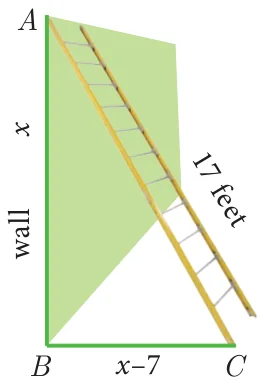

Steps to solve a problem
Step 1: Convert the word problem to a quadratic equation form
Step 2: Solve the quadratic equation obtained in any one of the above three methods.
Step 3: Relate the mathematical solution obtained to the statement asked in the question.
Example 3.36
The product of Kumaran’s age (in years) two years ago and his age four years from now is one more than twice his present age. What is his present age?
Solution
Let the present age of Kumaran be \(x\) years.
\(\text{Two years ago, his age} = (x - 2) \text{ years.}\)
\(\text{Four years from now, his age} = (x + 4) \text{ years.}\)
Given,
\((x - 2)(x + 4) = 1 + 2x\)
\(x^2 + 2x - 8 = 1 + 2x \;\Rightarrow\; (x - 3)(x + 3) = 0 \;\text{ then, }\; x = \pm 3\)
Therefore, \(x = 3\) (Rejecting \(-3\) as age cannot be negative)
Kumaran’s present age is 3 years.
Example 3.37
A ladder 17 feet long is leaning against a wall. If the ladder, vertical wall and the floor from the bottom of the wall to the ladder form a right triangle, find the height of the wall where the top of the ladder meets if the distance between bottom of the wall to bottom of the ladder is 7 feet less than the height of the wall?

Solution
Let the height of the wall \(AB = x\) feet
As per the given data \(BC = (x - 7)\) feet
In the right triangle \(ABC\), \(AC = 17\) ft, \(BC = (x - 7)\) feet
By Pythagoras theorem, \(AC^2 = AB^2 + BC^2\)
\((17)^2 = x^2 + (x - 7)^2;\quad 289 = x^2 + x^2 - 14x + 49\)
\(x^2 - 7x - 120 = 0 \;\text{ hence, }\; (x - 15)(x + 8) = 0 \;\text{ then, }\; x = 15 \text{ (or) } -8\)
Therefore, height of the wall \(AB = 15\) ft (Rejecting \(-8\) as height cannot be negative)
Example 3.38
A flock of swans contained \(x^2\) members. As the clouds gathered, \(10x\) went to a lake and one-eighth of the members flew away to a garden. The remaining three pairs played about in the water. How many swans were there in total?
Solution
As given there are \(x^2\) swans.
As per the given data \(x^2 - 10x - \frac{1}{8}x^2 = 6\) we get, \(7x^2 - 80x - 48 = 0\)
\(x = \dfrac{-b \pm \sqrt{b^2 - 4ac}}{2a} = \dfrac{80 \pm \sqrt{6400 - 4(7)(-48)}}{14} = \dfrac{80 \pm 88}{14}\)
\(\text{Therefore,}\quad x = 12,\ -\dfrac{4}{7}.\)
Here \(x = -\frac{4}{7}\) is not possible as the number of swans cannot be negative.
Hence, \(x = 12\). Therefore total number of swans is \(x^2 = 144\).
Example 3.39
A passenger train takes 1 hr more than an express train to travel a distance of 240 km from Chennai to Virudhachalam. The speed of the express train is more than that of the passenger train by 20 km per hour. Find the average speed of both the trains.
Solution
Let the average speed of passenger train be \(x\) km/hr.
Then the average speed of express train will be \((x + 20)\) km/hr
Time taken by the passenger train to cover distance of 240 km \(= \dfrac{240}{x}\) hr
Time taken by express train to cover distance of 240 km \(= \dfrac{240}{x + 20}\) hr
Given,
\(\dfrac{240}{x} = \dfrac{240}{x + 20} + 1\)
\(240\left[\dfrac{1}{x} - \dfrac{1}{x + 20}\right] = 1 \;\Rightarrow\; 240\left[\dfrac{x + 20 - x}{x(x + 20)}\right] = 1 \;\text{ we get, }\; 4800 = (x^2 + 20x)\)
\(x^2 + 20x - 4800 = 0 \;\Rightarrow\; (x + 80)(x - 60) = 0 \;\text{ we get, }\; x = -80 \text{ or } 60.\)
Therefore \(x = 60\) (Rejecting \(-80\) as speed cannot be negative)
Average speed of the passenger train is 60 km/hr
Average speed of the express train is 80 km/hr.